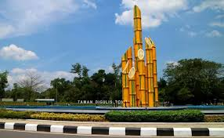

West Kalimantan: The Land of a Thousand Rivers and Diverse Cultures
West Kalimantan, located on the western side of Borneo Island, is a province known for its extensive river systems, diverse ethnic groups, and rich cultural heritage. From the equator-straddling city of Pontianak to the remote rainforests and traditional longhouses, West Kalimantan offers a unique and adventurous experience.
The Land of a Thousand Rivers:
West Kalimantan's geography is dominated by its extensive river systems, earning it the nickname "Land of a Thousand Rivers":
A Mosaic of Ethnic Groups:
West Kalimantan is home to a diverse population, with several major ethnic groups:
Cultural Heritage and Traditions:
West Kalimantan's cultural heritage is rich and diverse:
Natural Beauty and Biodiversity:
West Kalimantan boasts significant natural beauty and biodiversity:
Economic Potential:
West Kalimantan's economy is supported by:
West Kalimantan offers a unique experience for visitors, combining natural wonders, diverse cultures, and a rich history. Here's a deeper look:
River Systems: The extensive river systems, particularly the Kapuas River, are a defining feature of West Kalimantan's geography.
Rainforests and Biodiversity: The province's rainforests are home to a wide variety of flora and fauna.
Dayak Traditions and Culture: The Dayak people's traditions, including longhouses, dances, music, and crafts, are central to West Kalimantan's cultural identity.
Multi-Ethnic Society: The presence of Malay, Chinese, and other ethnic groups contributes to the province's cultural diversity.
Agriculture and Natural Resources: Agriculture, particularly palm oil, and natural resources, such as mining and forestry, are important economic drivers.
West Kalimantan is focused on sustainable development, balancing economic growth with the preservation of its natural environment and cultural heritage. Ecotourism is also being promoted to showcase the province's natural beauty.
